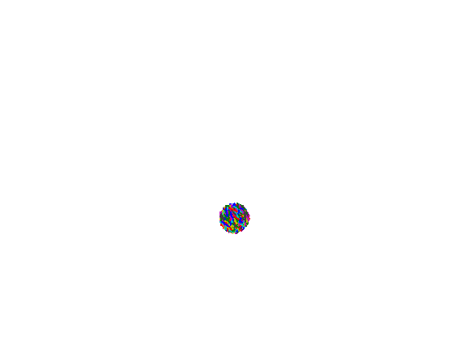
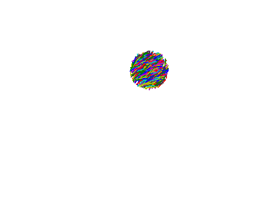

Smoke rings


A collection of fibers is initially packed densely in a sphere. By
gravity they fall downwards and start to break apart. Left:
side view, right: top view, in a coordinate system which
follows the center of mass.
Stefan Engblom
Last modified: Fri Sep 6 14:50:55 CEST 2024